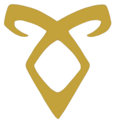
MOONSHADOW
SHADOWHUNTERS
Introdução
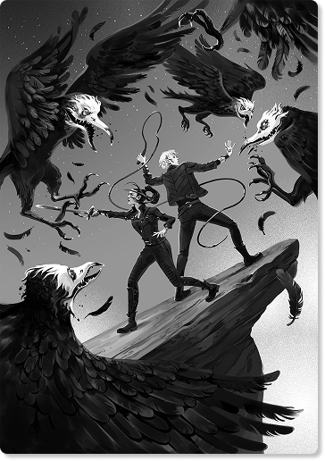
Em um mundo onde demônios espalham o caos entre os mundanos e criaturas do Submundo disputam poder
entre si, surgem os Caçadores de Sombras — humanos com sangue angelical, criados para combater as
forças demoníacas e manter o equilíbrio entre os diferentes seres.
O universo literário de Shadowhunters é composto por diversas sagas interligadas. Cada uma apresenta
uma história própria, com personagens, conflitos e jornadas únicas, mas todas se conectam e se
complementam, formando um universo rico, complexo e cheio de mistérios.
Apesar dessas conexões, cada saga pode ser lida de forma independente, permitindo que o leitor
escolha por onde começar e explore as histórias no seu próprio ritmo, seja seguindo uma ordem
específica ou simplesmente mergulhando na narrativa que mais chamar sua atenção.
O universo Shadowhunter gira em torno dos nephilins, conhecidos como Caçadores de Sombras, guerreiros responsáveis por proteger o mundo humano de ameaças sobrenaturais. Eles não nasceram da união direta entre anjos e humanos, mas de um ritual que mistura sangue humano com sangue angelical. Segundo a história, demônios de outras dimensões passaram a invadir o mundo, levando Jonathan Shadowhunters a invocar o Anjo Raziel em busca de ajuda. O anjo então lhe entregou os três Instrumentos Mortais — o Cálice, a Espada e o Espelho — além do Livro Gray, que contém as Marcas sagradas. Ao beber do Cálice com sangue angelical, Jonathan se tornou o primeiro Caçador de Sombras, e seus descendentes herdaram habilidades como força, velocidade e resistência, além da capacidade de usar Marcas, símbolos mágicos que concedem poderes como cura, memória e proteção, mantendo o equilíbrio entre o mundo humano e o mundo das sombras.
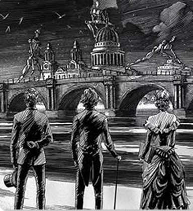
Biblioteca Shadowhunters
SAGA
Uma trama sombria na Londres vitoriana, onde amor, segredos e máquinas infernais ameaçam o mundo dos Caçadores de Sombras.
Na Londres vitoriana, Tessa Gray descobre possuir um poder raro e perigoso ao chegar à cidade em busca de seu irmão. Ao ser envolvida pelo mundo dos Caçadores de Sombras, ela se vê no centro de uma conspiração que envolve criaturas mecânicas, segredos ocultos e forças sombrias que ameaçam destruir tudo ao seu redor.
Londres, 1878
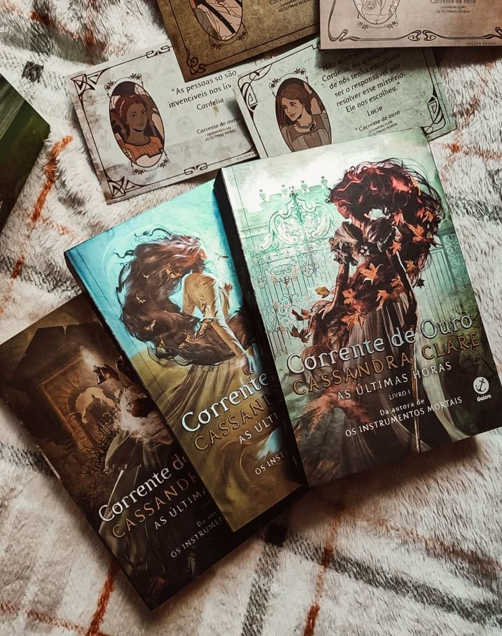
SAGA
Na Londres eduardiana, uma nova geração de Caçadores de Sombras enfrenta mistérios sombrios e perigos que ressurgem do passado.
Na Londres do início do século XX, os filhos dos heróis de outra geração vivem entre festas, segredos e responsabilidades como Caçadores de Sombras. Quando uma nova ameaça demoníaca começa a surgir, eles precisam enfrentar perigos que parecem ligados ao passado, enquanto lidam com amizades, amores e escolhas que podem mudar seus destinos para sempre.
Londres, 1903-1904
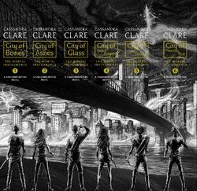
SAGA
Um mundo oculto de demônios e caçadores nas ruas de Nova York.
Em meio às ruas de Nova York, Clary Fray descobre um mundo oculto habitado por Caçadores de Sombras, demônios e criaturas do Submundo. Ao lado de novos aliados, ela mergulha em segredos sobre seu passado enquanto enfrenta ameaças que podem mudar o destino de todos.
Nova York, 2007-2012
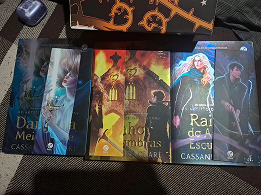
SAGA
Em Los Angeles, segredos, magia proibida e assassinatos colocam os Caçadores de Sombras contra forças ainda mais perigosas.
Em Los Angeles, Emma Carstairs e Julian Blackthorn enfrentam uma série de assassinatos misteriosos ligados ao Submundo. Enquanto investigam, eles se veem envolvidos em segredos proibidos, alianças perigosas e sentimentos que desafiam as leis dos Caçadores de Sombras, colocando em risco não apenas suas vidas, mas todo o equilíbrio entre os mundos.
Los Angeles, 2012-2015
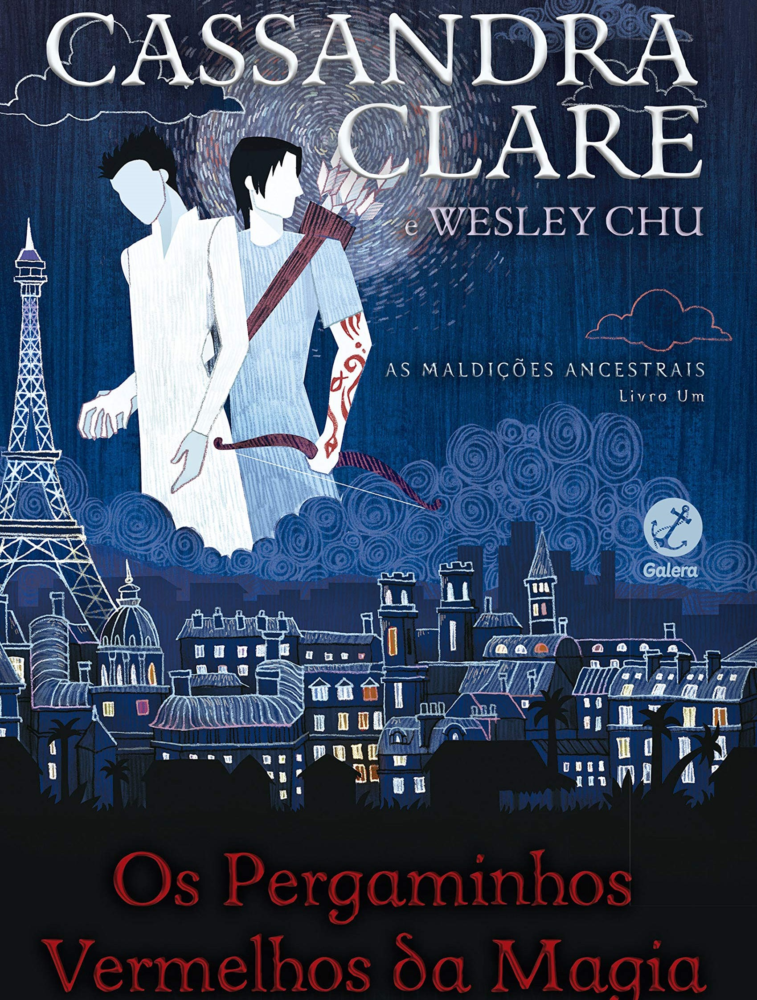
SAGA
Aventuras pelo mundo com Magnus e Alec, envolvendo magia poderosa, segredos antigos e ameaças que ultrapassam gerações.
Acompanhando Magnus Bane e Alec Lightwood, a saga explora aventuras ao redor do mundo enquanto enfrentam ameaças mágicas, cultos secretos e mistérios ligados a antigas forças do mal. Entre momentos de leveza, romance e perigos constantes, os dois se veem envolvidos em conflitos que podem afetar não apenas suas vidas, mas todo o mundo das sombras.
Diversos locais, 2007-2013
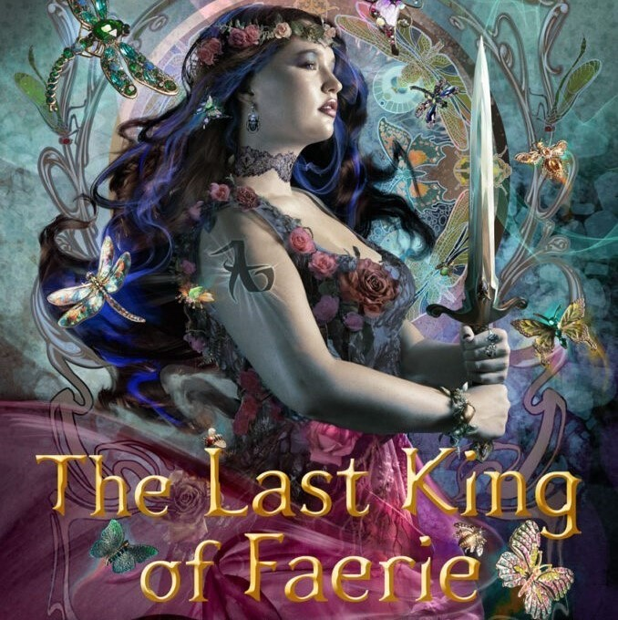
SAGA
O desfecho épico do universo Shadowhunters, onde forças antigas retornam e uma última batalha decidirá o destino dos Caçadores de Sombras.
A saga final do universo Shadowhunters, reunindo personagens conhecidos em uma última grande história. Com o retorno de forças antigas e ameaças ainda mais perigosas, os Caçadores de Sombras enfrentarão uma batalha decisiva que pode mudar para sempre o mundo das sombras.
Ainda não confirmada
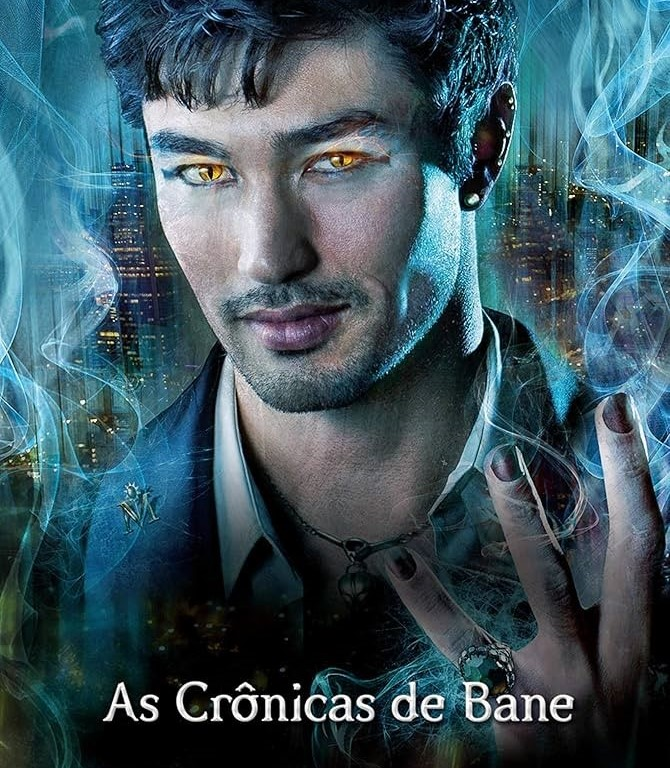
CONTO
Histórias marcantes da longa vida de Magnus Bane, revelando aventuras, romances e segredos ao longo dos séculos.
Contos que acompanham Magnus Bane em diferentes momentos de sua vida imortal. Ao longo dos séculos, ele se envolve em eventos históricos, encontros com outros Caçadores de Sombras e situações repletas de humor, perigo e emoção, revelando mais sobre seu passado, suas relações e seu papel no mundo das sombras.
Diversos locais e períodos, do século XVIII ao século XXI
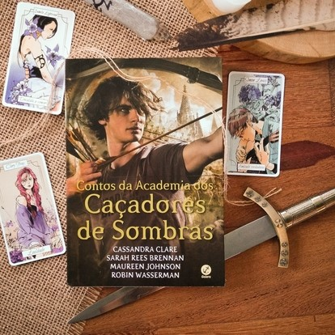
CONTO
Histórias da Academia que formam novos Caçadores de Sombras.
CContos da Academia dos Caçadores de Sombras” acompanha Simon Lewis após os eventos de Instrumentos Mortais, enquanto ele treina para se tornar um Caçador de Sombras. Ao lado de outros alunos, ele enfrenta desafios, descobre segredos sobre a história dos Nephilins e vivencia acontecimentos que revelam mais sobre o passado e o funcionamento do mundo das sombras.
Diversos locais e períodos, do século XVIII ao século XXI
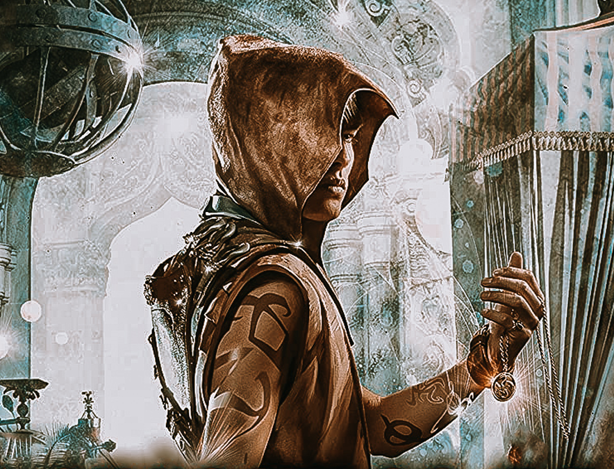
CONTO
Contos sombrios que revelam segredos do Mercado das Sombras.
Histórias centradas em Jem Carstairs enquanto ele investiga o enigmático Mercado das Sombras. Ao longo dos contos, segredos do Submundo vêm à tona, conectando diferentes épocas e personagens, e revelando mistérios, tragédias e eventos que influenciam diretamente o destino dos Caçadores de Sombras.
Diversos locais e períodos, conectando passado e presente do universo Shadowhunters.
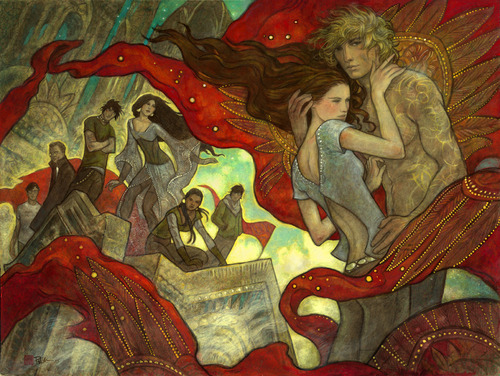
GUIA
Um guia essencial com tudo sobre o mundo dos Caçadores de Sombras.
Reunindo conhecimentos fundamentais dos Nephilins, a obra apresenta as leis, tradições e deveres que regem os Caçadores de Sombras. Entre explicações sobre marcas rúnicas, armas angelicais e criaturas do Submundo, revela também segredos, histórias e detalhes que ajudam a compreender o equilíbrio entre o mundo humano e o mundo das sombras.
Não se aplica.
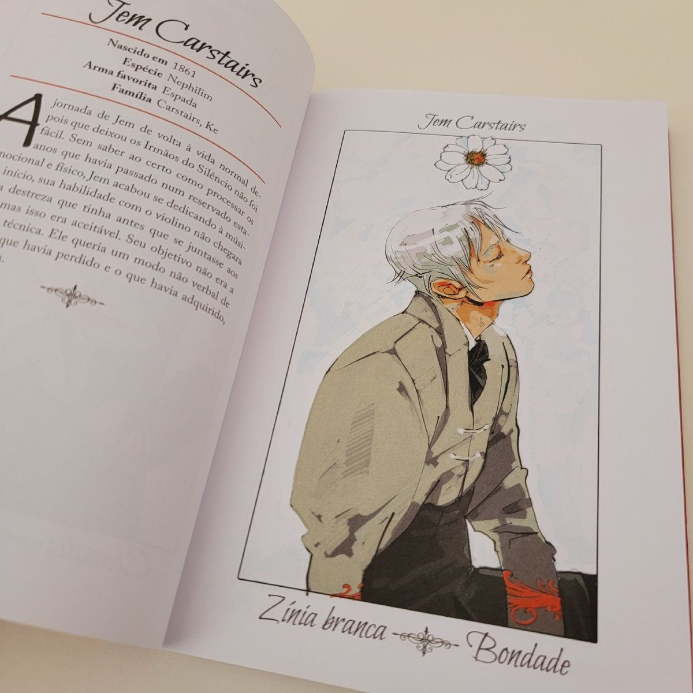
GUIA
Relatos e retratos que revelam figuras marcantes do mundo das sombras.
Por meio de registros e ilustrações detalhadas, são apresentados Caçadores de Sombras e criaturas do Submundo que marcaram a história. Entre feitos notáveis, alianças inesperadas e trajetórias individuais, surgem informações que aprofundam o conhecimento sobre personagens importantes e o impacto de suas ações no equilíbrio entre os mundos.
Diversos períodos da história do universo Shadowhunters
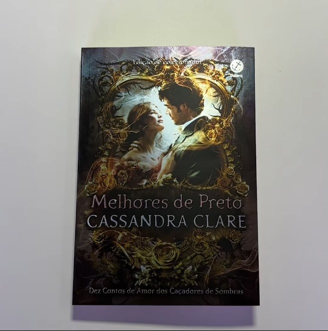
ESPECIAL
Histórias que revelam o estilo, o humor e os segredos dos Caçadores de Sombras.
PEntre ilustrações, curiosidades e comentários cheios de humor, são explorados costumes, tradições e até o estilo característico dos Caçadores de Sombras. Ao mesmo tempo, surgem detalhes sobre personagens conhecidos, suas relações e peculiaridades, oferecendo uma visão mais leve e íntima do cotidiano no mundo das sombras.
Não se aplica